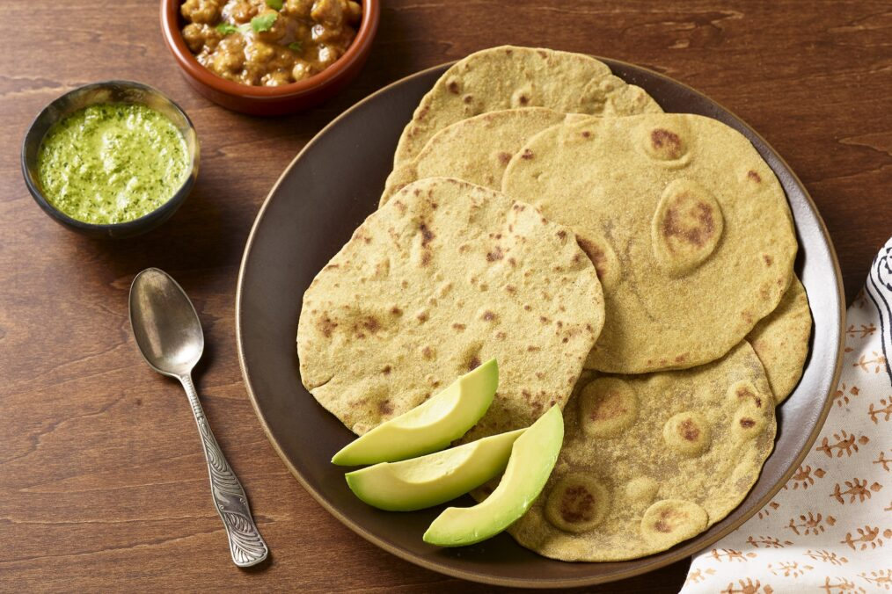

Our Roti and Avocado Recipe

Healthy Avocado and Roti Dish.
Chef Shankari Arcot teaches cooking classes online and in person.
She developed this variation of a classic roti/chapati to use California Avocado
in place of ghee. Not only does it make these quick flatbreads vegan,
but it makes them more nutrient-dense.
Ingredients of our Dish.
These are the freshly picked ingredients of our dish and
and sourced locally.
- 1 ripe, Fresh California Avocado, pitted and peeled
- 2 1/2 cups whole wheat flour
- 1/4 tsp. salt
- Warm water, as needed
- Vegetable oil, as needed
Steps of making our dish.
The following are the steps of making our delicious dish.
- In a medium bowl, mash the avocado to a fine paste.
- Add 2 cups of the flour and the salt.
- Knead the dough, sprinkling in warm water until the dough
is pliable and doesn’t stick to your fingers.
- Coat the dough with oil and cover it with plastic wrap.
Set aside at room temperature for 20 minutes.
- To bake, divide the dough into 12 equal portions and
round them into small balls.
- Dredge each ball in some of the remaining flour and flatten with your palms.
Roll them thinly on a floured surface to about 6 in. diameter and 1/8 in. thick.
- Heat a cast-iron skillet or flat top over medium. Lightly coat it with oil.
- Per order, cook 2 roti at a time. Toast them until small bubbles appear
on the top surface. Turn them over and cook until the bottom is lightly browned.
Rotate the roti on the surface to keep them from sticking.
- Transfer the roti to a plate and cover with a towel to keep warm.
Home